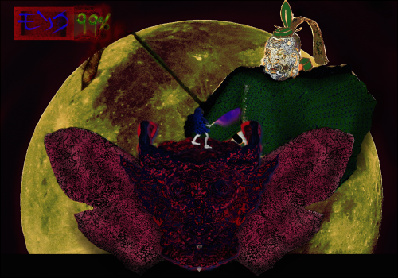

Design Proposal
#1 High Concept:
- The player must slice, dice, and laser their way through a bulwark of flying Shaolin monks and nature themed baddies while defending the ground beneath their feet in this fast paced fever dream of an adventure game.
- Its like Mario Bros (1983) but you control a katana wielding monk riding a giant demon head with laser eyes.
#2 Genre:
EndGon will be a 2D action-adventure arena fighter with elements of objective defense and management.
#3 Platform:
EndGon will be for desktop only.
#4 Story:
The year is 1300AD, the location is somewhere in Asia, and the dimension is definitely not ours.
In this cruel acid-trip of a world, the Bulb Shogunate (the lord of the land) has gone mad and begun enslaving common-folk to construct a tower to heaven so that he can conquer it. Playing as a wandering widower monk from a land far away, you must command and defend EndGon (the flying maw-gate to the underworld) as it soars up the tower. In a quest to save the land from the tyranny of the shogunate (and your family in heaven whom you couldn't save on earth) you must slash and raze your way through a hailstorm of flying Shaolin monks and other nature themed enemies.
A fundamental themes of the game is its confusing, somewhat unpalatable, borderline artistically tasteless content. I want the game to feel almost alien in terms of the style of its visual and conceptual delivery. The story should be very difficult for the player to follow (I.E. virtually up for interpretation) and the dialogue (if any) should be written in gibberish that mimics the characters of various languages spoken by the cultures of Asia. It seems reasonable to do this for two reasons:
- It fits the strange and uncomfortable aesthetic the game is trying to emanate.
- With a relatively simple game like this, it doesn't seem very fitting for story to play a large role. Gameplay and visuals should be prioritized.
I suppose an underlying theme of the game is a defiance against complacency. One of my favorite quotes connects to this idea: "The only thing necessary for evil to triumph is for good men to do nothing"(Castlevania SotN). The main character of this game, the monk, is acting on this principle. As someone who was unable to save his family from death, he has been given a second chance to save them (and others) from the Bulb Shogun. Even in a land far away from his own he still attempts to make a morally righteous choice and help others. This is partially out of his own interests (saving his family) but also out of the ideology that had someone else done the same for him (risking their lives to save his family) he might not have been a father without children and a husband without a wife. The monk won't let the same thing that happened to him happen to others and so he puts his life and the sanctity of his soul on the line to collaborate with a literal portal to hell and fight against an establishment whose power is far beyond his own.
EndGon (the character) is traversing the tower to preserve equilibrium in the realm. If the shogunate were to conquer heaven a natural balance in power between man and spirits would be disturbed. Without heaven, by contrast of sensation there would be no hell: those who live without honor would be rewarded and the innocent would be punished. As a result, EndGon must preserve the balance. Realistically, the explanations for EndGon's and the monk's behavior don't really matter because they won't be central to gameplay.
#5 Esthetic:
Aesthetically the game should be a confusing mess of saturated colors, a mosh pit of textures, and filled to the brim with themes of nature and old Asia. The art style consists of a chaotic melding of abstract expressionist art along with altered/disfigured photographs and feudal/period art. The atmosphere should be disturbing and on edge: conflicting, dark saturated reds and blues glaze the screen as hordes of bizarre enemies encroach the monk and EndGon from all sides. The game should be a window in to a bootleg nightmare hell-scape whose existence in a fictional setting is enough to prompt discomfort.
Ideally sounds would trigger when:
- The monk hits an enemy.
- EndGon hits an enemy with a laser (every second).
- An enemy performs its attack animation.
- An enemy hits the monk or EndGon.
- EndGon's shell breaks.
- EndGon shoots his tongue out.
- EndGon's tongue touches an enemy or the monk.
- EndGon reels an enemy into its mouth with its tongue.
- EndGon chews on an enemy or the monk.
- EndGon spits out a projectile.
- The monk walks.
- The monk jumps.
- The monk climbs on EndGon.
I am probably forgetting a few sound effects (although it seems unlikely that all this sound will be implemented anyways due to time constraints).
I would like for there to be a lot of over the top (borderline obnoxious) enemy death sounds: a mixture of digital and vocal SFX (the vocals being recorded by me) that are chosen randomly upon an enemy's death.
The background music would probably be a mixture of vaporwave and lo-fi music. Vaporwave is typically pretty strange and colorful and lo-fi is usually calm, which suits the bloody slaughter of evil Shaolin monks by sheer contrast. I don't intend on making the music myself. If time permits, it would be nice to experiment.
As time progresses and the player traverses farther up the tower the tracks could switch. The tracks could either be randomly selected or they could have a set orientation (I.E. they trigger at specific points in the level). It would probably be better if they were random considering that the player would have to listen to the same track over and over if they died, as they would reset back to the beginning. That would be frustrating.
#6 Gameplay:
Mechanics
Note: The same mechanics may be listed more than once in different contexts. This is intentional: I don't like to delete ideas even if they are already written down from the fact that looking at them next to another mechanic might inspire new ideas. Sometimes the specific wording can be important as well in regard to my personal understanding.
The Monk
- He can slash his sword in the direction he is facing to deal damage to enemies.
- He can walk around on top of EndGon's head.
- He can grab onto EndGon's body to maneuver around on him.
- He can slash his sword in the direction he is facing while grabbing onto EndGon.
EndGon
- can shoot eye lasers in the direction of the cursor (probably requiring a recharge: to be determined);
- His eyes will likely turn at a delayed pace to follow the cursor so that the player will need to prepare.
- He can shoot his tongue out in the direction of the cursor to grab an enemy or the monk. Once he has grabbed an enemy, it will automatically be dragged into his mouth.
- He can consume enemies over time, restoring health to his skin underneath his shell.
- He can restore the monk's health by holding him in his mouth.
- EndGon has a shell that surrounds various parts of his face that can be broken off by the enemy. If an enemy deals enough damage to any one part of EndGon's face after breaking its respective shell (the color of the skin beneath changing to reflect how much damage it has taken) endgon will collapse and the player will lose.
- Endgon's shell will return after covering a a certain percentage of the tower (increments of 20% probably), although the skin beneath will not be healed at these points.
Other Details
- If the monk takes enough damage from enemies, he will "die" and go into free-fall. If the monk's dead body touches the bottom of the screen, he wont respawn until the player reaches EndGon's next shell checkpoint (20% increment). In all likelyhood this will probably cause the player to lose. However, it is a good way to encourage the player to go all out in a fight if they believe that the next checkpoint is coming.
- If the player uses EndGon's tongue to catch the monk in a state of freefall, EndGon can heal the monk over time. Once the monk is healed by a certain threshold (at first taking less than the amount of time that it would normally take to heal back to full, but taking increasingly longer for each death) he will return to life and receive a temporary attack power and speed buff.
- Both EndGon and the monk receive partner danger bonuses: If either the monk or EndGon takes damage, the other partner's attack power and speed (eyeball rotation speed for EndGon) will be boosted temporarily with a potency that is proportionate to the amount of damage taken. This caps off at a certain point.
- Additionally EndGon can deal damage to the monk with eye lasers to power up his partner danger bonus, causing him to deal more damage with eye lasers and projectile spitting (and potentially monk health regeneration).
- Perhaps the monk's slice will be more powerful depending on the distance from the player (the closer the monk's center is to the enemy, the more damage he will do).
- Likewise, the more kills that the monk scores without taking damage (decreasing, but not resetting when he takes damage) the more attack power and speed he will be granted. This caps off at a certain point.
- In some sense, the game is heavily based on managing resources: EndGon isn't punished for taking damage and the monk receives a power and speed bonus if EndGon is hit. so in cases of extreme stress it might just be better to let EndGon get hit in a non-lethal area and let the monk kill a group of enemies. Additionally, while it is somewhat punishing, the same action can be performed with the monk: making him take some damage in quick succession to kill a group of enemies more quickly with EndGon.
- These mechanics are implemented to reward the player for using their resources well, to reward them for playing carefully, and to not punish them too much for messing up and getting hit.
- Perhaps the player could damage boost off of an enemy, jumping into their attack to bounce in the other direction
- It is appropriate that the monk (and probably EndGon) would have invincibility frames where they can't take damage a certain number of frames after being hit.
- It is likely that the monk will have the ability to jump on enemies heads as a way of maneuvering. This would allow the monk to reach enemies that he would normally not be able to.
- Upon dying there may be a UI element showing chart of the tower and a percentage of how much of it that the player traversed. This would be an incentive for the player to overcome their highest percentage.
- Enemy spawn locations are to be set manually (either activating at a certain time or by physically passing a trigger). This way there can be certain circumstances where the player is intended to use their resources in a specific way in order to overcome it. While this may make the game a little less interesting and replayable it will give more control to the circumstances in which the player has to endure: I want to make sure that its actually possible to overcome a specific part of the game with the combinations and quantities of enemies that spawn.
The list of potential enemies by type include:
- Basic Melee: Enemies that fly towards the player and try to attack them with swords. They have an animation where they swing the sword above their head to give the player a moment to hit them. These enemies flinch (perhaps only if they are hit in a specific area) when hit. Maybe they should have a segment of their animation where they flinch if they are hit. Otherwise, hitting them increases the speed of the animation: this would promote a more precise plan of attack rather than just mashing left click.
- Leeches: Weaker enemies that come in packs and latch onto EndGon from the closest location and deal damage over time. Perhaps they could give a small boost to nearby enemies when latched. EndGon wouldn't be able to handle these enemies once they are attached to him unless he spits an projectile out at them.
- Drills: Enemies that deal constant (albeit not very frequent) damage upon contact. Shooting them with eye lasers would push them away.
- Archers: Enemies that shoot either at the monk or EndGon at a range which the monk cannot normally reach without jumping on another enemy's head. Upon spawning, they will either choose the player or one of EndGon's facial regions to attack.
- The Bulb Shogunate: This would be the final boss of the game. His abilities are to be determined.
Controls
- The 'a' & 'd' keys [when the monk is on top of EndGon or in the air]- Moves the monk to the left and right respectively.
- The spacebar [when the monk is on top of EndGon or grabbing EndGon]- Causes the monk to jump upwards. Holding jump causes the monk to stay in the air for longer.
- The spacebar [when the monk is overlapping EndGon]- gGab onto EndGon.
- The 'w','a','s', and 'd' keys (when the monk is grabbing onto EndGon)- Moves the monk up, left, down and right respectively.
- Left click- Slash in the direction that the monk is facing.
- Shift- Make the monk move more quickly in any given direction.
- The mouse cursor- The cross-hair for where EndGon can shoot enemies with his laser eyes.
- Hold right click- Make EndGon shoot eye lasers in the direction of the cursor.
- Hold the 'e' key- Shoot out EndGon's tongue in the direction of the cursor.
Teaching the Game
If it were absolutely necessary for me to do this, I would include a tutorial level outside of the main game that introduces different types of enemies and walks through the controls and mechanics: walking with monk, slicing, aiming and shooting with EndGon, jumping on heads, and maybe the attack & speed boosting mechanics.
Otherwise, I would rather that the player figure these mechanics out by themselves. The flow of gameplay would be oriented in such a way where the player adapts to the difficulty curve over multiple runs of the game. It would be somewhat integrated into gameplay (giving the player a short amount of time to experiment with controls fighting weaker enemies before more difficult situations emerge) although I don't want for the game to be so easy that they player can complete it in the first run.
Player Learning
If I had to describe strategies that would help the player win the game, they would be:
- Use EndGon's tongue to increase the monk's mobility by eating and launching him: Without being spit out the monk is fast, but he will probably have difficulty covering threats on all sides of EndGon.
- Don't be afraid to let EndGon and Monk take some damage: It might be better to give the monk a boost then and kill all of the enemies on one side then to try and jump through a wall of enemies.
- Keep your eye out: This is definitely a game that involves multitasking. Try to make sure that you are using all of the abilities at your disposal. If EndGon is damaged underneath his shell and isn't eating anything, shoot his tongue out at an enemy so that he can recover some health. There is no reason not to. It is definitely somewhat difficult, but you will probably be inclined to attack enemies with EndGon's lasers and slash enemies with the monk's sword at the same time.
- Walk the fine line: If you play dangerously in critical moments, you can be rewarded.
- Shooting monk's dead body from EndGon's mouth at enemies to kill them
- Jumping on enemies' heads rather than getting boxed in by them.
- Getting up-close to enemies with Monk's slash to deal more damage.
- Shooting monk with EndGon's lasers to give EndGon a partner danger bonus and thus making him more powerful.
- Kill all the enemies that attack EndGon and dodge all the ones that attack the monk: If you horde all of the enemies that follow or attack the monk together, they can be more easily defeated.
#7 Other:
- The name EndGon is comprised of two concepts of different flavor: EndGon is phonically similar to n-gon: a term used in 3d modeling that references a face with more than four edges. From my understanding, n-gons can have very detrimental effects if they remain in a 3d model in game development. This really doesn't have to do with anything: I just thought it would be funny to include an evil n-gon in a game, and I greatly enjoy games with an evil atmosphere and / or antihero protagonist.
- The full name of the game is 'EndGon: Grass Tower to Heaven, Demon Way to Hell'. The "demon way to hell" is an ideology described and paraphrased in a classic Japanese movie series: "Lone Wolf and Cub". It is a bit difficult to explain what it actually means. If I had to try, I would say its a justification to follow the path of evil or dishonor under an accepted spiritual or moral consequence (or: an accepted disconnect from reality). In other words, you know you are doing wrong but you do it anyways because the end goal is either righteous or the moral consequences are meaningless. Additionally, the name just sounds gritty.
#8 Screenshots:
#8 About Me:
My name is Gabryel Dworman. I am an aspiring game developer currently studying as a sophomore at Rochester Institute of Technology in New York. I have been creating 2D digital art for around four years and deeply enjoy experimenting with style and atmosphere. Usually I try to delve heavily into up-close detail and line work, drawing character busts in front and profile perspectives, although I would like to expand my range. My preferred program is Artrage (5), although I have some experience in Photoshop. My strongest skills (outside of the ones previously mentioned) are in c# coding, html, css, java, c++ and Arduino language.